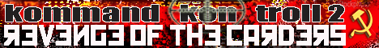

Planned Events include:
Kommand && KonTroll CTF is a competition where players are faced with network, web application, and binary reversing challenges. Players must compromise as many targets possible inside a private network. This network is a hostile environments where teams are allowed to attack each other. Team with the most points wins the game.
It is recommended to have a team with players of diverse backgrounds as there are plenty of challenges covering different types of vulnerabilities. It is also recommended to bring a clean computer with no personal/corporate data. Teams should also bring their own switches and harden them as once the game has started, everything goes...
Current episode is Kommand && KonTroll CTF 2.
Contact ctf@miamip0wnmachine.com for more information

Lockpick Village will be provided by Jax Locksport
a Jacksonville, FL TOOOL chapter.